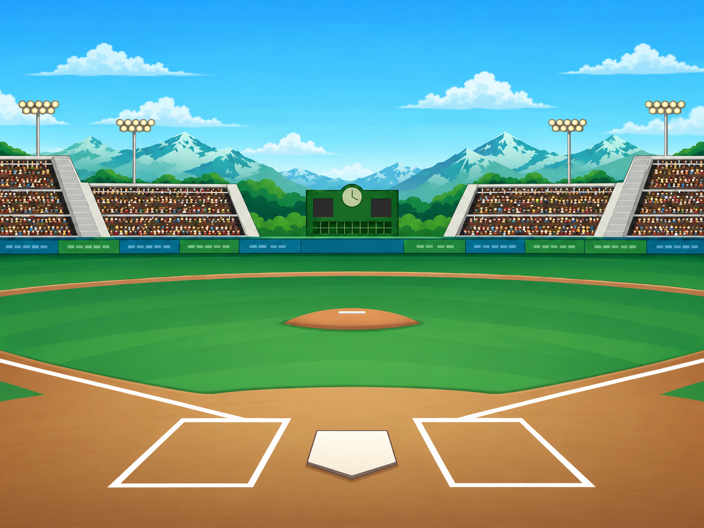

Actualización: estas mejoras ya están incluidas en la 1.0.23 publicada. El aviso de publicación pendiente que aparece debajo describe el estado de esta entrega cuando se preparó.
BASEBALL HEROES · CANDIDATO 1.0.20 · 22 OCT 2026Rookie con más detalle y textos mejor ajustados
Preparada y probada localmente; todavía no publicada. La versión pública continúa en 1.0.18. Railway mantiene la pausa para Free y Trial. La biblioteca 1.0.20 está verificada en una carpeta nueva del volumen, pero no está activada. No se hizo otro intento de despliegue mientras continúa la pausa oficial. Estado del proveedor.
Esta entrega incluye las mejoras de inventario de la 1.0.19 y añade el estadio Rookie reconstruido a partir de la referencia. Las capturas son del ejecutable real, en Chrome local, con cuentas QA aisladas. No son imágenes que simulen la interfaz.
HOME con un estadio más cercano al video
Gradas con filas y público más definido, luces pequeñas con relieve, montañas y nubes menos repetitivas. El césped tiene una profundidad más parecida a la referencia. La energía varía porque entre las capturas se inició el partido de prueba.
 Antes · candidato 1.0.19
Antes · candidato 1.0.19 Después · candidato 1.0.20
Después · candidato 1.0.20Misma cámara al batear
El bateador, el lanzador y los defensores conservan sus posiciones. El montículo y el plato cambian como máximo 1,32 píxeles en la medición del dibujo a 960 × 720. Se mantiene la cabeza aprobada; no se redibujó el personaje.
 Antes · candidato 1.0.19
Antes · candidato 1.0.19 Después · candidato 1.0.20
Después · candidato 1.0.20El mismo campo en BUILD
HOME, partido, colección y BUILD comparten el fondo Rookie. La ilustración se integra al ejecutable y sus píxeles se comparten entre las vistas. El estadio inicial ya no necesita descargar su PNG por separado. Los otros estadios conservan sus recursos.
 Antes · candidato 1.0.19
Antes · candidato 1.0.19 Después · candidato 1.0.20
Después · candidato 1.0.20LINEUP completo, sin letras en otro renglón
Los botones con un título corto ajustan su tipografía en una sola línea. Los saltos escritos expresamente, como PLAY / BALL, se conservan. Se probaron la colección, sus filtros, confirmaciones, compras y cancelaciones.
 Antes · candidato 1.0.19
Antes · candidato 1.0.19 Después · candidato 1.0.20
Después · candidato 1.0.20Compras y progreso comprobados
- Registro real desde nivel 1, liga Rookie y sin lentes.
- El mismo partido consume cinco unidades de energía una sola vez, incluso al volver a entrar con la actualización.
- Vista previa y CANCEL PREVIEW en BUILD no gastan Coins ni guardan el cambio. Comprar Emerald Field cuesta 1200 Coins y se conserva después de recargar.
- Las gradas, luces, marcador, anuncios y mascota colocada siguen apareciendo en sus posiciones guardadas. Se revisaron también los estadios Mountain 095 y City.
- Los cinco cofres y los cuatro sobres conservan su compra, apertura y entrega única. Recargar mantiene el premio pendiente y COLLECT no lo duplica.
 Componentes y mascota de prueba sobre Rookie
Componentes y mascota de prueba sobre Rookie También incluye los cofres de la 1.0.19
También incluye los cofres de la 1.0.19Partido y BUILD · Cámara de bateo · Cofres y sobres · Medición geométrica · Conservación y paquete
Ilustración y referencia
El estadio nuevo es una reconstrucción con la herramienta integrada image_gen; no es un recurso original recuperado. Se usaron la ilustración anterior y el fotograma 04:10 del gameplay inicial. La nueva imagen conserva el encuadre, el contorno del campo y las zonas de las mejoras de BUILD. No incorpora voces del gameplay ni nuevos efectos de sonido.
Sprite final dentro del proyecto · Prompt completo, herramienta y referencias · Fotograma original de referencia · Notas de versión

Placa ilustrada 4:3 · sin interfaz ni jugadores impresosSiguen pendientes otras diferencias visuales del original, entre ellas componentes de BUILD y algunas ilustraciones pequeñas. Esta entrega no declara una copia exacta de todo el juego. Las pruebas HTTPS de la nueva versión están pendientes de que el proveedor habilite los despliegues.
Estado de publicación · Abrir la versión pública 1.0.18